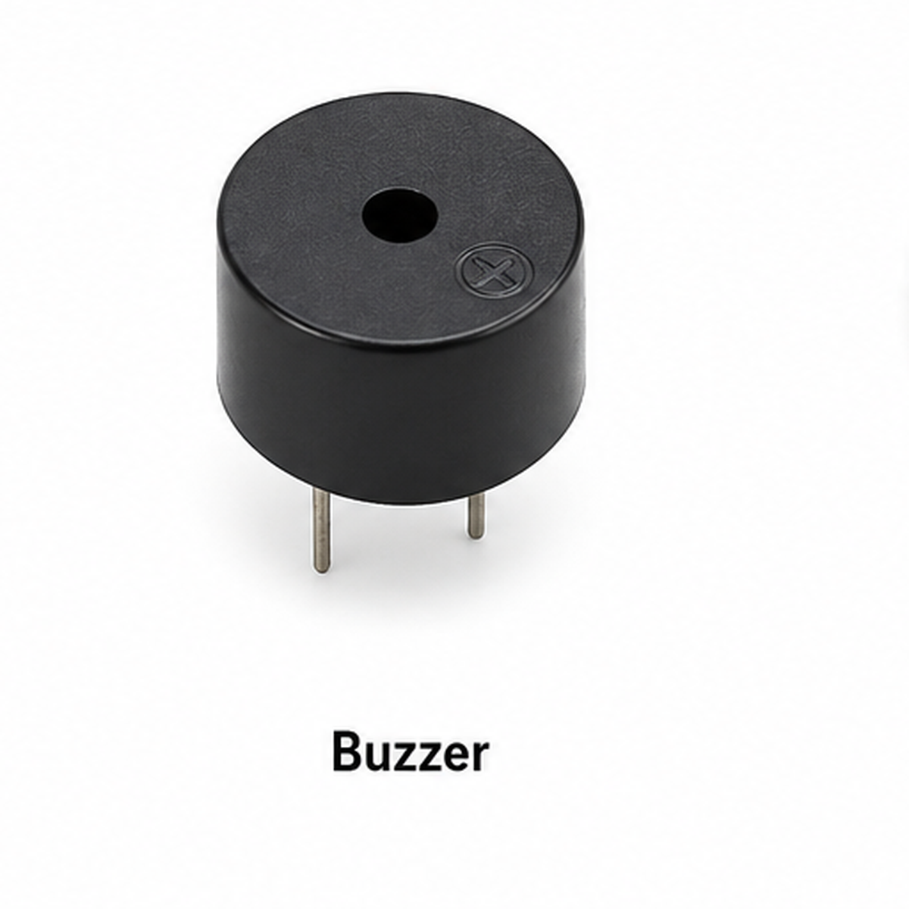

Ultrasonic_Musical_Distance_Instrument.ino

Ultrasonic Musical Distance Instrument

To develop an interactive Ultrasonic Musical Distance Instrument using Arduino UNO, an HC-SR04 ultrasonic sensor, a passive piezo buzzer and a single-digit 7-segment display.
The experiment measures the distance of an object, divides it into nine musical zones, generates a corresponding note, and displays the active zone number from 1 to 9.
The Ultrasonic Musical Distance Instrument is a contactless musical experiment that converts object distance into a sound frequency.
It uses an HC-SR04 ultrasonic sensor to measure the distance between the sensor and an object.
The Arduino sends a short trigger pulse and measures the duration of the returned echo signal.
The echo duration is used to calculate distance in centimeters.
The original program defines nine equal distance zones, each approximately 5 cm wide.
The valid programmed range begins at 2 cm and extends to less than 47 cm.
Each zone has an assigned musical note and corresponding buzzer frequency.
Zone 1 produces C4 at 262 Hz, while Zone 9 produces D5 at 587 Hz.
A single-digit common-cathode 7-segment display shows the current zone.
When the measured distance is outside the programmed range, the display shows 0 and the buzzer is silent.
The Serial Monitor reports the distance, zone, musical note and frequency whenever the active zone changes.
This experiment uses a passive buzzer capable of reproducing the frequencies generated by tone().
An active buzzer with a fixed internal oscillator is not suitable for playing the intended musical notes.
The ultrasonic sensor requires a clear reflection path to the object for reliable distance measurements.
The note changes by discrete zones. It does not provide continuous pitch control between the zones.

Main microcontroller for distance measurement, note generation and display control.

Measures the distance of an object using ultrasonic pulses.

Produces different musical notes using tone().

Displays the active musical zone from 1 to 9, or 0 when silent.

Each resistor limits current through one display segment.

Used to assemble the display, buzzer and sensor connections.

Connect the components to Arduino UNO.
No additional libraries are required. The source uses standard Arduino functions including pulseIn(), tone(), noTone(), digitalWrite() and Serial.print().
The display must be the common-cathode type because the original sketch uses HIGH to turn a segment ON.
Ensure all component PNG filenames match the source's names.
| Sensor Terminal | Arduino UNO Connection |
|---|---|
| VCC | 5V |
| GND | GND |
| TRIG | D9 |
| ECHO | D10 |
| Buzzer Terminal | Arduino UNO Connection |
|---|---|
| Positive (+) | D8, for a suitable low-current passive buzzer |
| Negative (−) | GND |
| Display Segment | Arduino Pin | Resistor |
|---|---|---|
| a | D2 | 220Ω |
| b | D3 | 220Ω |
| c | D4 | 220Ω |
| d | D5 | 220Ω |
| e | D6 | 220Ω |
| f | D7 | 220Ω |
| g | D11 | 220Ω |
| Common Cathode | GND | Not required |
Use seven separate 220Ω resistors, one for every display segment.
Both common-cathode terminals, if present, should be connected to GND.
The segment-to-package pin arrangement varies by display model. Identify each actual display pin before making connections.
Segment g uses D11, not D8. D8 is reserved for the buzzer.
Use a passive buzzer compatible with the Arduino output rating. A driver may be required for higher-current devices.
| Component Function | Arduino Pin |
|---|---|
| Display a | D2 |
| Display b | D3 |
| Display c | D4 |
| Display d | D5 |
| Display e | D6 |
| Display f | D7 |
| Buzzer Signal | D8 |
| HC-SR04 TRIG | D9 |
| HC-SR04 ECHO | D10 |
| Display g | D11 |

The HC-SR04 uses ultrasonic sound waves to measure distance.
Arduino first sends a 10 microsecond HIGH pulse to the TRIG terminal.
The sensor transmits an ultrasonic pulse and sets ECHO HIGH for a duration related to the return time.
Arduino measures this duration using pulseIn().
Distance (cm) = Echo Duration × 0.0343 / 2
The factor 0.0343 represents the approximate speed of sound in centimeters per microsecond.
Division by 2 accounts for the sound traveling to the object and back.
The program considers distances from 2 cm inclusive to 47 cm exclusive.
For a valid measurement, the zone index is calculated from the distance.
zone = (distance − 2) / 5
The floating-point result is converted into an integer, giving an index from 0 to 8.
The display shows zone + 1, so the visible zones are 1 through 9.
| Distance Range | Display | Note | Frequency |
|---|---|---|---|
| 2 to less than 7 cm | 1 | C4 | 262 Hz |
| 7 to less than 12 cm | 2 | D4 | 294 Hz |
| 12 to less than 17 cm | 3 | E4 | 330 Hz |
| 17 to less than 22 cm | 4 | F4 | 349 Hz |
| 22 to less than 27 cm | 5 | G4 | 392 Hz |
| 27 to less than 32 cm | 6 | A4 | 440 Hz |
| 32 to less than 37 cm | 7 | B4 | 494 Hz |
| 37 to less than 42 cm | 8 | C5 | 523 Hz |
| 42 to less than 47 cm | 9 | D5 | 587 Hz |
| Outside valid range | 0 | Silent | None |
The program stores nine frequencies in the notes array.
When an active zone is selected, tone() generates its corresponding frequency on D8.
The output remains at that pitch until a different zone is selected, or the measured distance becomes invalid.
The display uses seven independently controlled LED segments.
Each digit is defined in the digitPatterns array.
The displayDigit() function activates the required segments for numbers 0–9.
A common-cathode display illuminates its segments when Arduino drives them HIGH.
The variable previousZone begins at -1.
Arduino compares the newly calculated zone with the previous zone.
The buzzer, display and Serial Monitor are updated only when the zone value changes.
This prevents unnecessary repeated messages for every measurement in the same zone.
If the sensor cannot detect an echo before the 30 ms timeout, the distance is assigned -1.
Distances outside the valid range are also treated as an inactive zone.
Arduino then stops the buzzer and displays 0.
Arduino Experiment · Code Review
Ultrasonic Musical Distance Instrument · Select a step to highlight and understand the complete Arduino sketch.
Choose a step to highlight the corresponding Arduino statements and read their explanation.
HC-SR04 measures distance using ultrasonic pulses.
Arduino sends a trigger pulse and measures the duration of the returned echo.
The distance calculation accounts for the sound's round trip.
Frequency represents the number of waveform cycles per second.
The program uses frequencies ranging from 262 Hz to 587 Hz.
Larger frequencies produce higher musical pitches.
tone() generates a periodic square-wave signal.
Arduino selects a frequency from the notes array according to the detected zone.
noTone() stops that output.
A 7-segment display uses seven LED segments to represent numbers.
The digitPatterns array defines which segments should illuminate for each digit.
The source uses common-cathode active-HIGH segment control.
previousZone stores the last selected zone.
The program updates the buzzer, display and Serial Monitor only if the current zone differs from previousZone.
Small distance changes within the same zone do not generate a new Serial Monitor message.
Try it: Move an object slowly from about 4 cm to 44 cm in front of the sensor. Observe how each zone corresponds to a higher musical note and a different digit.
When the system starts, Arduino displays 0 on the 7-segment display, switches OFF the buzzer and prints the startup message.
ULTRASONIC MUSICAL INSTRUMENT
| Example Distance | Display | Note | Frequency |
|---|---|---|---|
| 4 cm | 1 | C4 | 262 Hz |
| 9 cm | 2 | D4 | 294 Hz |
| 14 cm | 3 | E4 | 330 Hz |
| 19 cm | 4 | F4 | 349 Hz |
| 24 cm | 5 | G4 | 392 Hz |
| 29 cm | 6 | A4 | 440 Hz |
| 34 cm | 7 | B4 | 494 Hz |
| 39 cm | 8 | C5 | 523 Hz |
| 44 cm | 9 | D5 | 587 Hz |
| 50 cm | 0 | Silent | None |
An object detected at 4 cm selects Zone 1.
Distance: 4.0 cm | Zone: 1 | Note: C4 | Frequency: 262 Hz
Display: 1
Buzzer: C4
Frequency: 262 Hz
An object detected at 24 cm selects Zone 5.
Distance: 24.0 cm | Zone: 5 | Note: G4 | Frequency: 392 Hz
Display: 5
Buzzer: G4
Frequency: 392 Hz
An object detected at 44 cm selects Zone 9.
Distance: 44.0 cm | Zone: 9 | Note: D5 | Frequency: 587 Hz
Display: 9
Buzzer: D5
Frequency: 587 Hz
If the measured distance is 50 cm, it lies outside the programmed range.
Distance: 50.0 cm | Silent
Display: 0
Buzzer: OFF
When the echo measurement times out, the program assigns distance -1.
Distance: No Echo / Out of Range
Display: 0
Buzzer: OFF
| Distance | Zone | Note |
|---|---|---|
| Less than 2 cm | Inactive | Silent |
| 2.0 cm | 1 | C4 |
| 6.9 cm | 1 | C4 |
| 7.0 cm | 2 | D4 |
| 11.9 cm | 2 | D4 |
| 12.0 cm | 3 | E4 |
| 42.0 cm | 9 | D5 |
| 46.9 cm | 9 | D5 |
| 47.0 cm | Inactive | Silent |
The displayed example distances are illustrative. Actual values depend on the ultrasonic echo measurement.
The program updates Serial Monitor output only when the selected zone changes.
If the object moves within the same zone, the current display and note remain active without a new Serial message.
The 50 ms delay occurs after each distance measurement and zone comparison.
The Ultrasonic Musical Distance Instrument demonstrates how Arduino UNO can convert object distance into musical notes and digital display information.
The HC-SR04 measures distance and the program selects one of nine musical zones between 2 cm and less than 47 cm.
The passive buzzer plays the assigned frequency, while the common-cathode 7-segment display shows the active zone number.
When the measured distance falls outside the valid range, the buzzer becomes silent and the display shows 0.
The experiment demonstrates ultrasonic distance measurement, zone-based classification, musical tone generation, digital display control and Serial monitoring.